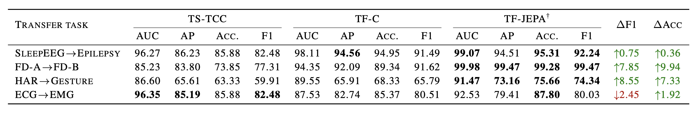
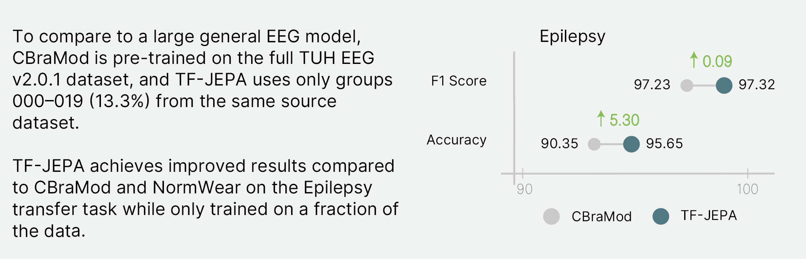
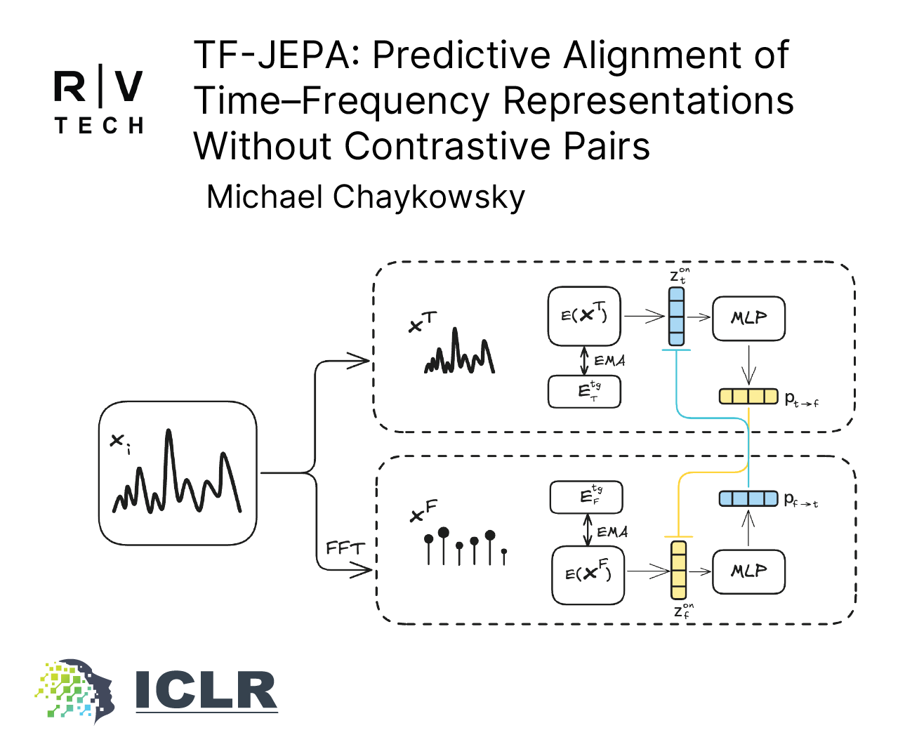

TF-JEPA: Predictive Alignment of Time–Frequency Representations Without Contrastive Pairs
Rivian and Volkswagen Group Technologies · Palo Alto, CA
Learning generalizable representations from multivariate time series is challenging due to complex temporal dynamics, distribution shifts, and the difficulty of designing effective contrastive pairs. TF-JEPA is a non-contrastive self-supervised method that leverages predictive alignment to integrate representations from the time and frequency domains without relying on negative sampling.
TF-JEPA utilizes dual online time and frequency encoders, each paired with its own momentum-updated target encoder, embedding both views into a stable and unified latent space. Experiments on sleep EEG, gesture recognition, mechanical fault detection, and EMG classification demonstrate that TF-JEPA matches or surpasses contrastive and time–frequency consistency baselines.
Replaces contrastive repulsion with cross-view prediction, eliminating the need for large batches or memory queues.
Removes the quadratic B×B similarity matrix, enabling training with batches as small as 32.
Improves cross-dataset transfer macro-F₁ by up to eight percentage points over contrastive baselines.
TF-JEPA couples an online time encoder with a momentum-updated frequency encoder and trains them with a lightweight cosine loss. The architecture rests on three design choices:
Frozen time and frequency target encoders are updated after every step by an exponential moving average (EMA, momentum m = 0.995) of the online weights, providing stable target representations with no gradient overhead.
Two small MLPs (128→256→128) map each online embedding to predict the corresponding target view. A BYOL-style cosine loss aligns the two domains without negative pairs.
Because the objective avoids contrastive collapse, all encoder weights can be unfrozen during downstream training, allowing full adaptation to the target distribution.

Each model is pre-trained on the source dataset and fine-tuned on the corresponding target dataset with identical classifier heads. All experiments were conducted on a single NVIDIA A10 GPU.
| Transfer Task | TS-TCC | TF-C | TF-JEPA | ΔF₁ | |||
|---|---|---|---|---|---|---|---|
| Acc. | F₁ | Acc. | F₁ | Acc. | F₁ | ||
| SleepEEG → Epilepsy | 85.88 | 82.48 | 94.95 | 91.49 | 95.31 | 92.24 | +0.75 |
| FD-A → FD-B | 73.85 | 77.31 | 89.34 | 91.62 | 99.28 | 99.47 | +7.85 |
| HAR → Gesture | 63.33 | 59.91 | 68.33 | 65.79 | 75.66 | 74.34 | +8.55 |
| ECG → EMG | 85.88 | 82.48 | 85.37 | 80.51 | 87.80 | 80.03 | −2.45 |

TF-JEPA is also compared against large-scale foundation models (NormWear, CBraMod) pre-trained on diverse physiological corpora. TF-JEPA uses only a 13.3% subset of TUH EEG v2.0.1, yet remains competitive across all benchmarks.

An ablation across six momentum values (0.9–0.9995) shows that higher EMA momentum consistently improves transfer metrics. The HAR→Gesture task shows +11.3 pp gain at m = 0.9995 compared to the lowest momentum, confirming that target network stability is critical for non-contrastive time-series learning.

Presented at the 1st ICLR Workshop on Time Series in the Age of Large Models (TSALM). Click to view full resolution.

If you find this work useful, please cite our paper:
@inproceedings{chaykowsky2026tfjepa,
title = {{TF-JEPA}: Predictive Alignment of Time--Frequency
Representations Without Contrastive Pairs},
author = {Chaykowsky, Michael},
booktitle = {1st ICLR Workshop on Time Series in the Age of
Large Models (TSALM)},
year = {2026},
url = {https://iclr.cc/virtual/2026/10013864}
}
{kind=link}